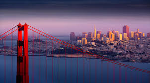
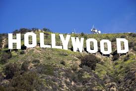
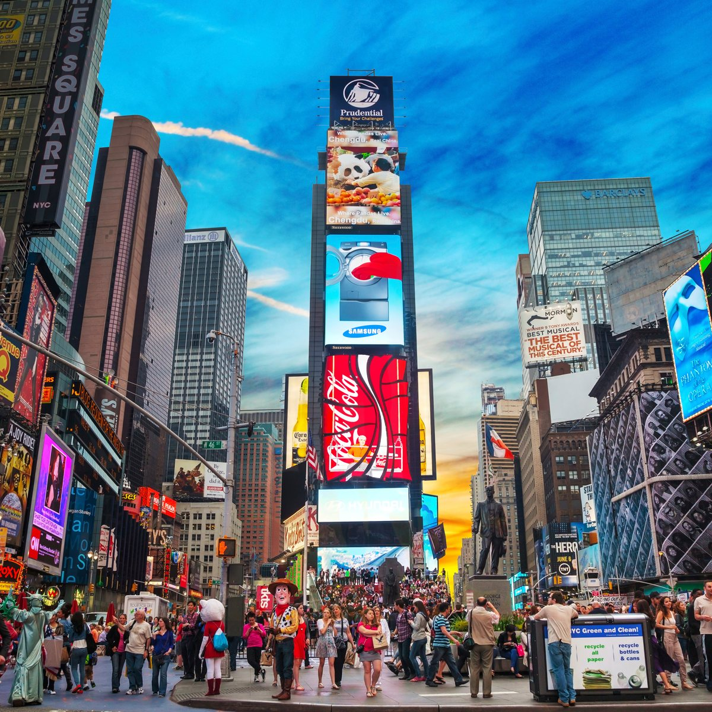
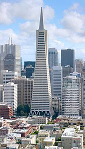

Some great vacation locations are Los Angeles, San Francisco, and New York. All of these incredible locations are in the United States, although one location is located in the East Coast, and two are located on the west coast. These locations all have very different lifestyles although being in the same country. Los Angeles is known for Hollywood and its many great movies. San Francisco is known for the Golden Gate Bridge and its mixture of architecture. New York is known for its subways, and the Empire State Building.
   